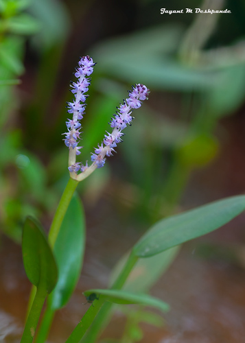

Aponogetonaceae
Cape Pondweed Family
Aponogetonaceae is a family of aquatic monocotyledonous flowering plants belonging to the order Alismatales. It comprises a single genus, Aponogeton, found in freshwater habitats across the tropics and subtropics of the Old World (Africa, Asia, Australia). These perennial herbs grow from rhizomes or tubers and are known for their often attractive submerged or floating leaves and distinctive emergent spike inflorescences. Several species are popular aquarium plants.
Overview
The Aponogetonaceae family contains only the genus Aponogeton, with approximately 50-60 species of aquatic herbs. They are native to tropical and subtropical freshwater environments in Africa, Madagascar, Asia, and Australia, with one species (A. distachyos) extending into temperate South Africa and becoming widely naturalized elsewhere. They inhabit still or flowing waters such as ponds, lakes, ditches, streams, and temporary pools, growing rooted in the substrate.
Plants grow from starchy rhizomes or tubers, producing basal leaves that can be fully submerged, floating on the water surface, or emergent. Leaf shape is highly variable among species. The inflorescence is characteristic: a simple or forked spike bearing numerous small flowers, typically held above the water on a long stalk (peduncle). The flowers lack distinct sepals and petals, instead having 1-3 (or none) petal-like tepals.
Several Aponogeton species are highly valued in the aquarium trade for their attractive foliage, including the unique Madagascar Lace Plant (A. madagascariensis) with its fenestrated (net-like) leaves. Aponogeton distachyos (Cape Pondweed or Water Hawthorn) is cultivated for its edible flower spikes and has naturalized in many parts of the world, including Europe and California. Some species have tubers that are eaten locally.
Quick Facts
- Scientific Name: Aponogetonaceae
- Common Name: Cape Pondweed family, Aponogeton family
- Number of Genera: 1 (Aponogeton)
- Number of Species: Approximately 50-60
- Distribution: Old World tropics and subtropics (Africa, Asia, Australia), temperate South Africa. Naturalized elsewhere.
- Evolutionary Group: Monocots - Alismatales
- Current Date: March 29, 2025
Key Characteristics
Growth Form and Habit
Aquatic perennial herbs, growing submerged, floating-leaved, or emergent from starchy rhizomes or tubers.
Leaves
Leaves are mostly basal, arising from the rhizome/tuber, simple, and petiolate. Leaf blade shape is diverse: linear, lanceolate, ovate, or oblong, with entire or sometimes undulate margins. Venation varies from parallel to net-like with prominent midrib and cross-veins. Some species (A. madagascariensis) have uniquely fenestrate leaves (lacking tissue between veins, creating a lace-like appearance). Stipules are absent.
Inflorescence
The inflorescence is a distinctive spike (or pair of spikes, sometimes more), borne on a long peduncle that usually emerges above the water surface. Spikes are typically dense with numerous small flowers. A spathe-like bract often subtends the young inflorescence but usually falls off early (caducous).
Flowers
Flowers are small, usually bisexual (sometimes functionally unisexual), actinomorphic or slightly zygomorphic, often fragrant, and densely arranged on the spike axis.
- Perianth: Highly reduced, lacking distinct sepals and petals. Consists of (0-)1-3(-6) bract-like or petal-like tepals, usually white, yellowish, pinkish, or lilac/purple. These are often persistent.
- Androecium: Stamens usually 6 (sometimes more, up to 18, or fewer), typically in two whorls. Filaments are distinct, often persistent; anthers are small, basifixed, often colorful (yellow, blue, black).
- Gynoecium: Carpels are superior, numbering (2-)3-6(-9), and typically distinct (apocarpous) or only slightly fused at the very base. Each carpel contains (1-)2-8(-12) ovules on basal or laminar placentation. Style is short or absent; stigma simple or slightly decurrent along the style.
Fruits and Seeds
The fruit is an aggregate of follicles. Each follicle develops from a single carpel and dehisces along the ventral suture to release the seeds.
Seeds number from one to several per follicle. They lack endosperm; the embryo is straight with a single large cotyledon. The seed coat is sometimes adapted for aquatic dispersal (fleshy or spongy). Vivipary (precocious germination) occurs in some species.
Chemical Characteristics
Plants may contain alkaloids. They lack the milky latex found in some other Alismatales families (like Alismataceae).
Field Identification
Identifying Aponogetonaceae (Aponogeton species) relies on recognizing their aquatic habit, leaf types, and unique spike inflorescences within their native (or naturalized) ranges:
Primary Identification Features
- Aquatic Habitat: Perennial herbs growing rooted in freshwater ponds, streams, etc.
- Rhizomes/Tubers: Possess underground storage organs.
- Basal Leaves: Leaves arise from base, blade submerged, floating, or emergent; shape variable (linear to ovate), sometimes uniquely fenestrate.
- Spike Inflorescence: Flowers borne on a dense spike (often simple or forked) held above the water on a long peduncle.
- Reduced Perianth: Flowers small, lacking true sepals/petals, usually with 1-3 small, often white or colored, petal-like tepals (sometimes absent).
- 6 Stamens (Usually).
- Distinct Superior Carpels: Usually 3-6 separate carpels forming the gynoecium.
- Follicle Fruits: Fruit an aggregate of dry follicles.
- Old World Native Range: Naturally occur only in Africa, Asia, Australia (though A. distachyos is widely naturalized).
Secondary Identification Features
- Caducous Spathe: A bract may enclose the young spike but usually falls early.
- Fragrant Flowers: Many species have scented flowers.
- Variable Leaf Venation: Can range from parallel to net-like.
Seasonal Identification Tips
- Growing Season: Leaves are present; check for characteristic shapes (including fenestrate types) and submerged/floating/emergent habit.
- Flowering Season: Varies, often during warmer months or specific water level conditions. The emergent spikes are the most diagnostic feature.
- Fruiting Season: Follicles develop on the spike after flowering.
Common Confusion Points
Confusion primarily occurs with other aquatic monocots:
- Potamogetonaceae (Pondweed family): Also aquatic herbs with rhizomes, often with both submerged and floating leaves. Flowers are very different: small, greenish, 4-merous, lacking obvious tepals, usually in dense emergent spikes, fruit an aggregate of drupelets or achenes (not follicles).
- Alismataceae (Water Plantain family): Aquatic herbs, often with emergent arrowhead-shaped or ovate leaves (sometimes submerged ribbons). Flowers usually have distinct whorls of 3 green sepals and 3 white/pink petals, numerous stamens, numerous distinct superior carpels, fruit an aggregate of achenes.
- Hydrocharitaceae (Frogbit family): Diverse aquatic herbs (Elodea, Vallisneria, Hydrocharis). Flowers often unisexual, typically with 3 sepals and 3 petals, ovary inferior, fruit fleshy/berry-like or a capsule, often maturing underwater.
- Juncaginaceae (Arrowgrass family): Marsh or aquatic herbs with linear leaves. Flowers small, inconspicuous, typically 6 tepals, 6 stamens, superior ovary (3 or 6 carpels, distinct or fused), fruit follicles or schizocarps. Inflorescence usually a raceme or spike, but flowers differ significantly from Aponogeton.
- Nymphaeaceae (Water Lily family): Floating-leaved aquatics with large rhizomes. Flowers large, showy, with numerous petals and stamens, syncarpous ovary (carpels fused), fruit a fleshy berry-like capsule maturing underwater. Belongs to a different, early-diverging angiosperm lineage (Nymphaeales).
The combination of aquatic habit, spike inflorescence(s), flowers with 1-3 petaloid tepals, 6 stamens, and 3-6 distinct superior carpels developing into follicles is key for Aponogetonaceae.
Field Guide Quick Reference
Look For:
- Aquatic herb (freshwater)
- Rhizome or tuber
- Basal leaves (submerged, floating, emergent)
- Inflorescence an emergent spike (often forked)
- Small flowers on spike
- 1-3 petaloid tepals (or 0), no true petals/sepals
- 6 stamens (usually)
- (2-)3-6 distinct superior carpels (apocarpous)
- Fruit: Aggregate of follicles
Key Variations (within Aponogeton):
- Leaf form (linear, ovate, fenestrate, etc.)
- Leaf habit (submerged, floating, emergent)
- Spike: Simple vs. Forked
- Tepal number and color
- Flower sexuality (mostly bisexual)
- Tuber presence/shape
Notable Examples
The family consists solely of the genus Aponogeton, which includes several well-known species:

Aponogeton madagascariensis
Madagascar Lace Plant
Native to Madagascar, this species is highly prized in the aquarium hobby for its unique submerged leaves which lack tissue between the veins, creating a beautiful lace-like or net-like structure. Requires specific water conditions to thrive.

Aponogeton distachyos
Cape Pondweed / Water Hawthorn
Native to temperate South Africa, this species has floating oblong leaves and distinctive forked spikes of fragrant white flowers with prominent dark anthers. It is widely cultivated and naturalized in mild climates worldwide. The flower spikes are sometimes eaten.

Aponogeton ulvaceus
(Aquarium Aponogeton)
Native to Madagascar, this is another popular aquarium plant known for its broad, strongly undulate (wavy-edged), translucent submerged leaves. It produces long, often forked spikes of yellowish flowers. Grows from a tuber.

Aponogeton crispus
Crinkled Aponogeton
Native to Sri Lanka, this species is common in aquariums. It has submerged leaves with distinctly crisped or wavy margins. Flowers are typically white or pinkish on single emergent spikes. Like many aquarium Aponogetons, it often requires a dormant period.
Phylogeny and Classification
Aponogetonaceae belongs to the large and diverse order Alismatales, which represents an early-diverging lineage within the monocots. This order is notable for containing a high proportion of aquatic and wetland plants, including families like Araceae (aroids), Potamogetonaceae (pondweeds), Hydrocharitaceae (frogbit family), and Alismataceae (water plantains).
Within the Alismatales, Aponogetonaceae is a well-defined, monophyletic family consisting only of the genus Aponogeton. Its exact position relative to other families has varied slightly in different analyses, but it is consistently placed within the core Alismatales clade. It is often grouped near families like Potamogetonaceae, Ruppiaceae, Zosteraceae (seagrasses), Juncaginaceae, and Cymodoceaceae, representing part of the radiation of aquatic monocots distinct from the Araceae lineage and the Alismataceae lineage.
Position in Plant Phylogeny
- Kingdom: Plantae
- Clade: Angiosperms (Flowering plants)
- Clade: Monocots
- Order: Alismatales
- Family: Aponogetonaceae
Evolutionary Significance
Aponogetonaceae, while small, offers insights into monocot evolution, particularly aquatic adaptations:
- Aquatic Specialization: Represents a distinct lineage highly adapted to freshwater aquatic life, showcasing variations in leaf morphology (submerged, floating, emergent, fenestrate) and reproductive strategies (emergent spikes, vivipary).
- Floral Reduction: The simplified flower structure, lacking distinct sepals and petals and having variable numbers of tepals, illustrates trends towards reduction common in aquatic, often specialized pollination systems.
- Apocarpy: The retention of distinct carpels (apocarpy) is considered an ancestral trait among monocots, contrasting with the fused carpels (syncarpy) found in many other Alismatales like Hydrocharitaceae and Araceae.
- Biogeography: Its Old World distribution, with high diversity in Madagascar and Southern Africa, provides data points for understanding the diversification and historical biogeography of aquatic monocots.
- Horticultural Diversity: The selection and cultivation of various species for aquariums demonstrate the morphological diversity within the single genus Aponogeton.